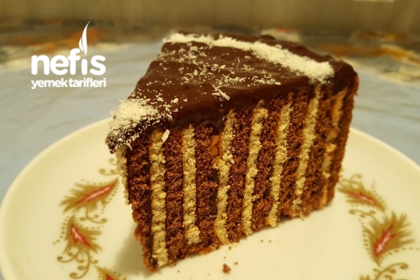

Petibor Biskuvili Pasta
Kolay pratik ve bir o kadar lezzetli bir pasta yapmak icin bu tarifi takip edin
- 3 paket sade petibör bisküvi
- 3 paket kakaolu petibör bisküvi
- 4 su bardağı süt
- 3 yemek kaşığı un
- 2 yemek kaşığı kakao
- 7 yemek kaşığı şeker
- 1 adet yumurta
Petibörlu Biskuvili pasta nasil yapilir?
- Krema malzemelerini tencereye koyun ve pişirin, kıvam aldıktan sonra ılıması için kenara alın.
- Ilıdıktan sonra bisküvilerin her birine 1 kaşık krema sürerek yuvarlak kelepçeli kalıba bir sıra beyaz bir sıra kakaolu bisküvi dizin.
- Bittikten sonra üzerine arta kalan kremayı dökün ve 1-2 saat dinlenmesi için dolaba koyun.
- Servis edeceğinize yakın tercihinize göre üzerini süsleyip servis edin.
Kac kisilik:4-6
Hazirlama suresi:30 dakika
Pisirme yok
Tarif: Nefes Yemek Tarifleri
Afiyet Olsun